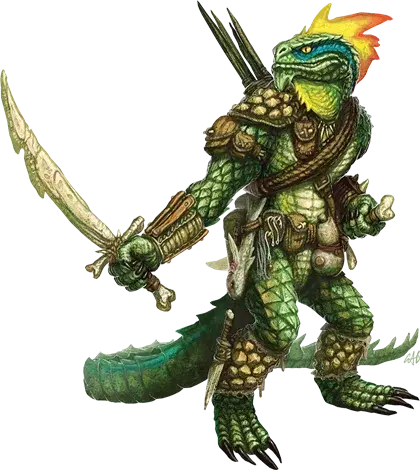

Людоящер
Lizardfolk

Если вы обдумываете, брать ли с собой чешуйчатого в приключение, запомните этот важный факт. Странный, нечеловеческий блеск в его глазах, когда он оглядывает вас – таким же взглядом вы смотрите на свежеподжареный стейк.
– Тордек, дварфийский воин и приключенец
Только дурак смотрит на людоящеров и видит не более, чем просто чешуйчатых гуманоидов. Несмотря на их физическую форму, людоящеры имеют больше общего с игуанами или драконами, чем с людьми, дварфами или эльфами. Людоящеры обладают чуждым и непостижимым образом мысли, их желаниями и мыслями руководит другой набор основных принципов, чем у существ с тёплой кровью. Их мрачные болотные дома могут располагаться в сотнях миль от ближайшего людского поселения, но разрыв между образом мыслей у них и у гладкокожих намного больше. Несмотря на их чужеродное мировоззрение, некоторые людоящеры прилагают усилия, чтобы понять и, по–своему, подружиться с представителями других рас. Такие людоящеры становятся преданными и умелыми союзниками.
Подробнее с лором людоящеров можно ознакомится в статье «Бестиарий: Людоящеры».
Иная логика
Рептилоидная натура людоящеров проявляется не только в их внешности, но также и в том, как они думают и действуют. Людоящеры испытывают куда как меньше эмоций, чем другие гуманоиды. Как и у большинства рептилий, их чувства в основном вращаются вокруг страха, агрессии, и удовольствия.
Вместо чувств людоящеры испытывают реакции на существ и ситуации. Например, люди, столкнувшиеся с сердитым троллем, на подсознательном уровне испытывают страх. Они испуганны, их движения и мысли путаются, они реагируют инстинктивно. Страх захватывает их и управляет ими. Для людоящеров же, наоборот, эмоции — это особые реакции на других существ, объекты и ситуации. Людоящер не думает, «я боюсь.» Вместо этого он рассматривает самых сильных и агрессивных существ как угрозу, которую по возможности нужно избегать. Если такие существа нападают, людоящер бежит, сражаясь только если его загнали в угол. Людоящер не боится тролля; вместо этого он понимает, что тролль – это внушающее страх, опасное существо, и реагирует соответственно.
Людоящеры никогда не сердятся так, как это делают другие, но они могут быть агрессивны к существам, которых они могут победить в бою, и которые не опасны для них как–то иначе. Они агрессивны к добыче, которую хотят съесть, существам, которые приносят им вред, и так далее.
Людоящерам приятны существа и вещи, которые облегчают жизнь. Приятные вещи должны быть сохранены и защищены, иногда даже за счет безопасности самого людоящера. Большинство приятных для людоящера существ и вещей оцениваются скорее как хорошие, чем как пугающие.
Холодные и расчётливые
Большинство гуманоидов считает хладнокровных людей недостаточно эмоциональными и сочувствующими. Тот же ярлык навесили на людоящеров.
В отсутствие каких–либо внутренних эмоциональных реакций, людоящеры ведут себя отстраненно. Они не оплакивают павших товарищей и не впадают в ярость по отношению к врагам. Они просто наблюдают и реагируют согласно ситуации.
У людоящеров нет эмоциональных связей с прошлым. Они оценивают ситуации, основываясь на их текущей и будущей полезности и важности. Наиболее сильно это проявляется тогда, когда людоящеры имеют дело с мёртвыми. Для людоящера умерший товарищ становится потенциальным источником еды. Этот компаньон, возможно, когда–то был воином или охотником, но теперь он – не более чем свежее мясо.
Людоящер, который живёт среди других гуманоидов, может, в течение долгого времени учиться уважать эмоции других существ. Людоящер не разделяет эти чувства, но вместе с тем оценивает их так же беспристрастно. Да, павший дварф мог бы быть полезнее как еда, но разрубание тела на стейки вызывает агрессию у других гуманоидов и делает их менее полезными в сражении.
Полезность и выживание
Мышление людоящеров могло бы показаться излишне жестоким, но оно помогает им выжить во враждебном окружении. Болота, которые они населяют, наполнены потрясающим разнообразием угроз. Людоящеры нацелены на выживание любой ценой, без сантиментов.
Людоящеры оценивают всё и всех с точки зрения полезности. Искусство и красота не имеют для них значения. Острый меч полезен и хорошо служит, в то время как тупой меч – мёртвый груз без точильного камня.
Людоящеры не видят необходимости планировать будущее дальше чем на сезон. Этот подход позволяет им поддерживать свой текущий уровень влияния в мире, но это ограничивает их развитие. У людоящеров нет никакого интереса к развитию письма, созданию долгосрочных планов, или культивированию других методов развития за пределы их обычного существования как охотников и собирателей.
Индивидуальность людоящеров
Вы можете использовать таблицу «Причуды людоящеров», чтобы определить персональные причуды или особые манеры вашего людоящера.
Причуды людоящеров
| к8 | Причуда |
| 1 | Вы ненавидите расточительство и не видите причин, почему бы не освежевать павших врагов. Пальцы – это вкусно и компактно! |
| 2 | Вы лучше всего спите, когда большей частью погружены в воду. |
| 3 | Деньги для вас бессмысленны. |
| 4 | Вы думаете, что есть только две разновидности гуманоидов: людоящеры и мясо. |
| 5 | Вы научились смеяться. Вы используете этот талант в ответ на все эмоциональные ситуации, чтобы лучше находить общий язык со своими товарищами. |
| 6 | Вы всё ещё не понимаете, как работают метафоры, но это не мешает вам использовать их при любом удобном случае. |
| 7 | Вы высоко цените мягких гуманоидов, которые понимают, что нуждаются в кольчуге и мечах, чтобы соответствовать тем подаркам, с которыми вы родились. |
| 8 | Вы любите есть свою еду пока она все ещё трепыхается. |
Несчастные мягкокожие
По сути, людоящеры относятся к другим гуманоидам с безразличием, граничащим с жалостью. Учитывая, что другие гуманоиды родились без крепкой чешуи и острых зубов, это вообще чудо, что им удалось выжить так долго. Типичный человек загнулся бы на болотах за день.
Однако, если другие существа оказываются полезными для людоящера, то они вызывают у людоящеров желание защитить их, которое тем сильнее, чем внешне слабее защищаемый.
Людоящеры оценивают таких существ как молодых и неспособных защищаться детёнышей, которые могут оказаться полезным в будущем, если о них заботиться.
Имена людоящеров
Людоящеры берут свои имена из драконьего языка. Они используют простые определения, даваемые племенем, основанные на известных делах и поступках. Например, Гарурт переводится как «топор»: имя, данное воину людоящеров, который победил орка и завладел его оружием. Людоящера, которому нравится скрываться в зарослях тростника, чтобы заманить в засаду животное, можно было бы назвать Ачуак, что означает «зелёный», описывая, как она смешивается с листвой.
Людоящеры не делают различия между мужскими и женскими именами. Каждое приведённое в качестве примера имя дано с переводом в круглых скобках.
Имена людоящеров: Арит (война), Ачуак (зелёный), Биэшра (животное), Варгач (сражение), Вертика (гора), Вилигнат (ожог), Вит (сталь), Вута (чёрный), Дарастрикс (дракон), Джанк (молоток), Гарурт (топор), Ирхтос (тайна), Кепеск (шторм), Кетенд (драгоценный камень), Корт (опасность), Косч (небольшой), Котар (демон), Литрикс (броня), Мирик (песня), Отокент (умный), Саурив (глаз), Троден (много), Туркер (ночь), Уск (железо).
Особенности людоящеров
Ваш персонаж людоящер обладает следующими особенностями.
Увеличение характеристик. Значение вашего Телосложения увеличивается на 2, а значение Мудрости увеличивается на 1.
Возраст. Людоящеры достигают зрелости к 14 годам, и редко живут больше 60 лет.
Мировоззрение. Любое.
Размер. Людоящеры немного более крупные и более высокие чем люди, и их красочные гребешки заставляют их казаться ещё больше. Ваш размер — Средний.
Скорость. Ваша базовая скорость ходьбы составляет 30 футов, и скорость плавания 30 футов.
Укус. Ваша зубастая пасть — это природное оружие, которое вы можете использовать, чтобы совершить безоружный удар. Если вы наносите такой удар, вы наносите колющий урон, равный 1к6 + ваш модификатор Силы, вместо дробящего урона, обычного для безоружного удара.
Умелый ремесленник. Как часть короткого отдыха, вы можете собрать кости и шкуру убитого Зверя, Конструкта, Дракона, Монстра или Растения размером от Маленького и больше, чтобы создать один из следующих предметов: щит, дубинка, метательное копье, или 1к4 дротиков или игл для духовой трубки.
Чтобы использовать эту особенность, вам нужно лезвие, такое как кинжал, или подходящие инструменты ремесленника, такие как инструменты кожевника.
Задерживание дыхания. Вы можете задержать своё дыхание на 15 минут за раз.
Знания охотника. Вы владеете двумя из следующих навыков по вашему выбору: Восприятие, Выживание, Природа, Скрытность и Уход за животными.
Природный доспех. У вас есть жёсткая, чешуйчатая кожа. Когда вы не носите доспех, ваш КД 13 + ваш модификатор Ловкости. Вы можете использовать КД своего природного доспеха, если доспех, который вы носите, даёт вам более низкий КД. При использовании природного доспеха, эффект от щита применяется как обычно.
Голодная пасть. В сражении Вы можете впасть в неистовство голодного хищника. Бонусным действием, Вы можете совершить специальную атаку укусом.
Если атака нанесла урон, то урон наносится как обычно для укуса, а вы получаете временные хиты, равные вашему модификатору Телосложения (минимум 1), и вы не можете использовать эту особенность снова, пока не закончите короткий или продолжительный отдых.
Языки. Вы можете говорить, читать и писать на Общем и Драконьем языке.
Речь людоящеров
Людоящеры могут отлично владеть Общим языком, но в следствие особенностей их склада ума, структура их речи отличается от других гуманоидов.
Людоящеры редко используют метафоры. Их речь почти всегда буквальна. Они могут понимать идиомы, но с некоторыми трудностями.
Имена путают их, если они не являются описательными. Они склонны давать собственные имена согласно своим традициям другим существам, используя слова Общего языка.
Людоящеры используют активные глаголы, чтобы описывать мир. Людоящер в холодную погоду может сказать, «Этот ветер приносит холод» вместо «Мне холодно». Людоящеры склонны определять вещи с точки зрения действий, а не результатов.